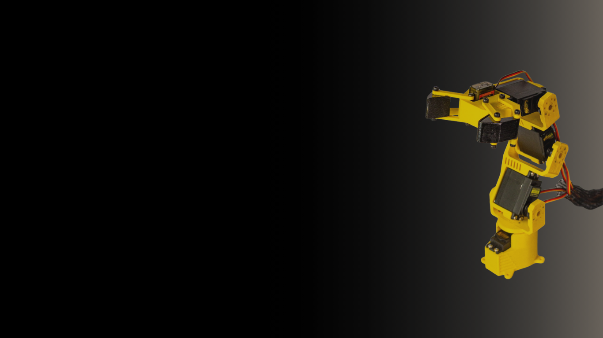
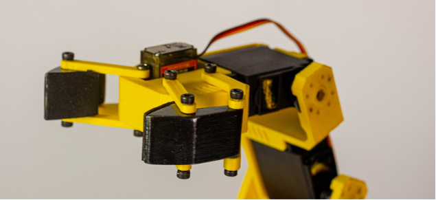
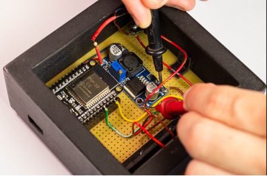
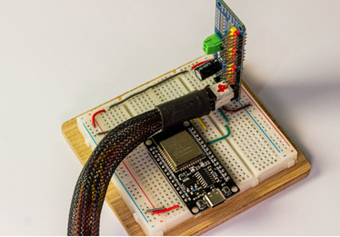
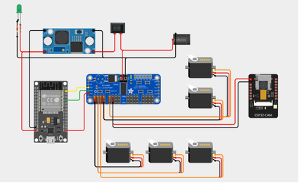
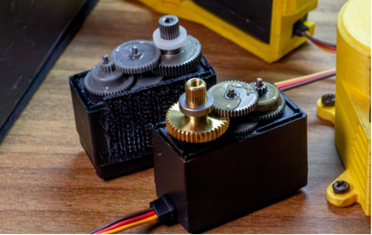

Projeto em destaque
"Um dos projetos de que mais tenho orgulho."
Desenvolvido como Trabalho de Conclusão do curso técnico em Eletrônica na Etec Philadelpho Gouvêa Netto, este projeto nasceu da ideia de explorar uma alternativa mais acessível para a construção de um protótipo funcional de braço robótico.
Inspirado em sistemas robóticos industriais, o projeto integra eletrônica, programação, sistemas embarcados e controle via Wi-Fi em uma estrutura funcional desenvolvida para fins educacionais e experimentais.
O processo
Da ideia inicial até um protótipo funcional, o projeto passou por quatro grandes etapas.
Explorar como conceitos presentes na robótica industrial poderiam ser aplicados na construção de um protótipo funcional.
Desenvolvimento e montagem da estrutura física responsável pelos movimentos e funcionamento mecânico do braço.
Integração entre microcontroladores, driver de servomotores e aplicações web para controle remoto do braço robótico.
Desenvolvimento da programação embarcada e de uma interface web para controlar o braço através de uma conexão Wi‑Fi.
Como o sistema funciona
Do comando enviado pelo navegador até o movimento físico do braço, em quatro etapas.
A caixa de ferramentas
Para transformar o projeto em um sistema funcional, diferentes tecnologias precisaram trabalhar em conjunto — desde o processamento dos comandos até o controle físico dos movimentos.
O cérebro do sistema
Utilizado como o microcontrolador principal do projeto, o ESP32 é responsável por executar a lógica do sistema, processar os comandos enviados pela interface e controlar a comunicação entre os diferentes componentes.
Controle dos movimentos
O módulo PCA9685 foi utilizado para gerenciar os sinais PWM responsáveis pelo controle dos múltiplos servomotores do braço robótico.
Transformando comandos em movimento
Responsáveis pela movimentação das articulações do braço, os servomotores recebem os comandos gerados pelo sistema e transformam os sinais de controle em movimentos físicos.
Uma rede para o controle
O ESP32 cria sua própria rede Wi‑Fi, permitindo que dispositivos como celulares, tablets ou computadores se conectem diretamente ao sistema e acessem o endereço IP através de um navegador.
O controle através do navegador
Permite controlar o braço robótico diretamente pelo navegador de qualquer dispositivo conectado à rede criada pelo ESP32, sem necessidade de instalar aplicativos específicos.
A experiência de controle
Tecnologias utilizadas para desenvolver a interface visual e os controles responsáveis pela interação entre o usuário e o sistema embarcado.
Processo de desenvolvimento
Registro
Reservei os espaços abaixo para os registros reais do processo — solda, protoboard, diagrama de fiação e montagem das engrenagens. Assim que você me enviar as fotos, encaixo cada uma no lugar certo.





Por que isso importa
Projetos como este representam uma parte importante da minha formação e da forma como enxergo a tecnologia.
Trabalhar com eletrônica, sistemas embarcados e programação me ensinou a olhar para uma solução de forma mais ampla — não apenas para o resultado final, mas também para a lógica, os componentes e as diferentes tecnologias necessárias para transformar uma ideia em algo funcional.
Essa experiência influencia diretamente a forma como desenvolvo outros projetos. Seja criando um site, uma interface ou explorando novas tecnologias, busco entender como cada parte se conecta e como diferentes ferramentas podem trabalhar juntas para criar uma solução completa.
Mais do que um projeto de eletrônica, o braço robótico representa a capacidade de partir de uma ideia, enfrentar problemas ao longo do processo e transformar conhecimento técnico em algo real e funcional.
O braço robótico reúne eletrônica, sistemas embarcados, programação, comunicação sem fio e desenvolvimento web em um único projeto funcional — da estrutura física ao controle através do navegador, cada parte foi desenvolvida para funcionar em conjunto.
Voltar ao portfólio